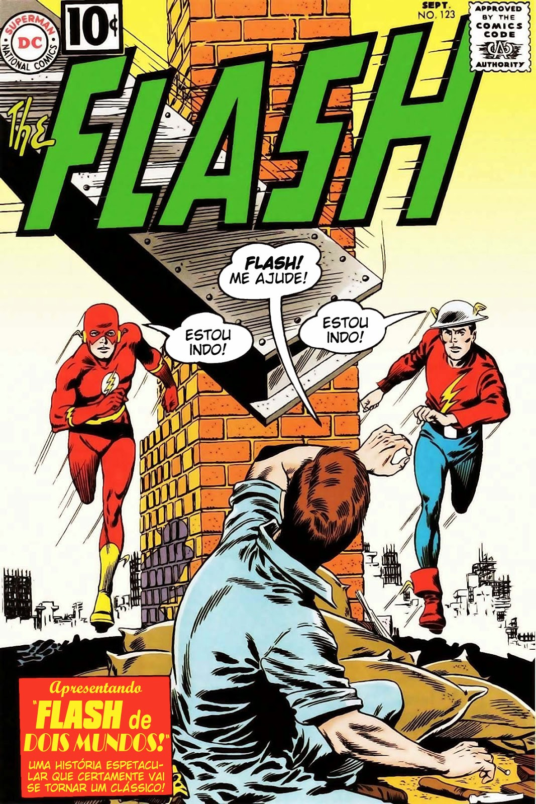

Flash de Dois Mundos (1961)
Gardner Fox criou em 1961 uma história que é a base fundamental para o conceito de multiverso que a DC Comics utiliza tão bem! Na trama vemos o Flash Barry Allen encontrar pela primeira vez com Jay Garrick e nessa história fica estabelecido que os dois são de Terras diferentes. Uma HQ divertida que mostra que o espírito do Flash é sempre o mesmo, independente de quem está debaixo do manto escarlate! A trama de Gardner Fox pode ser conferida no Brasil em diversas edições, sendo uma delas “Coleção DC 70 Anos” #4 (2008)